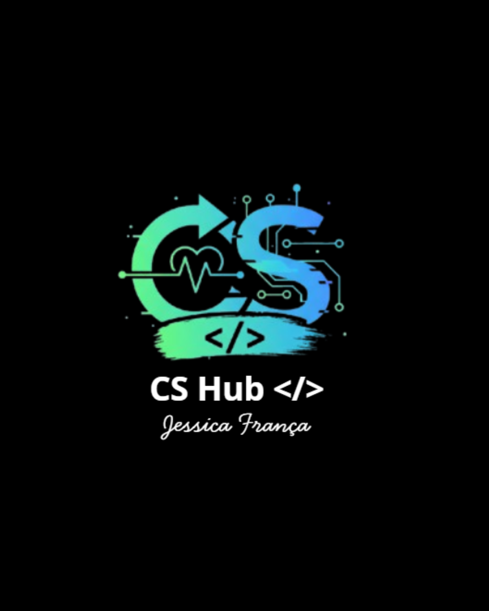
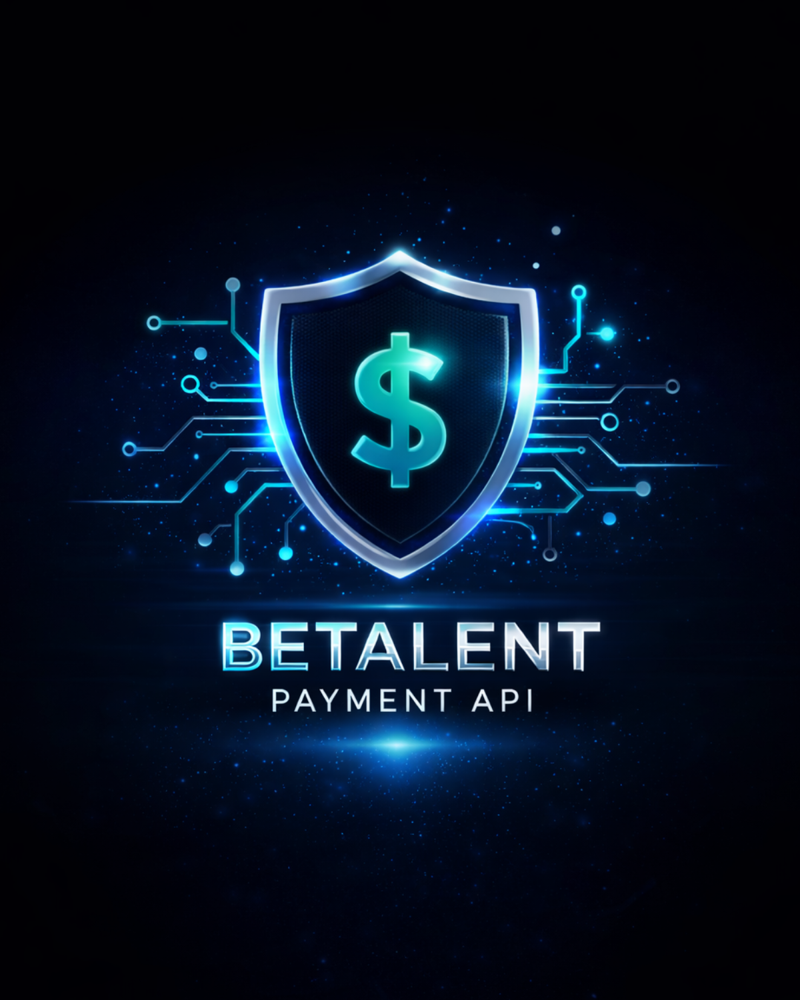
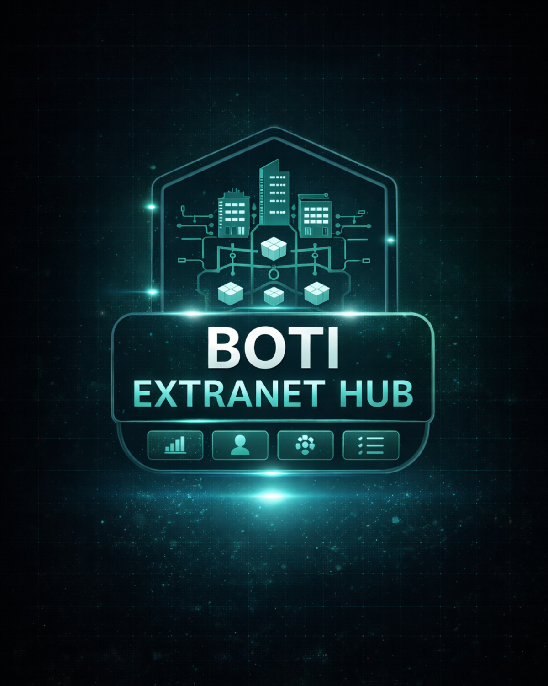
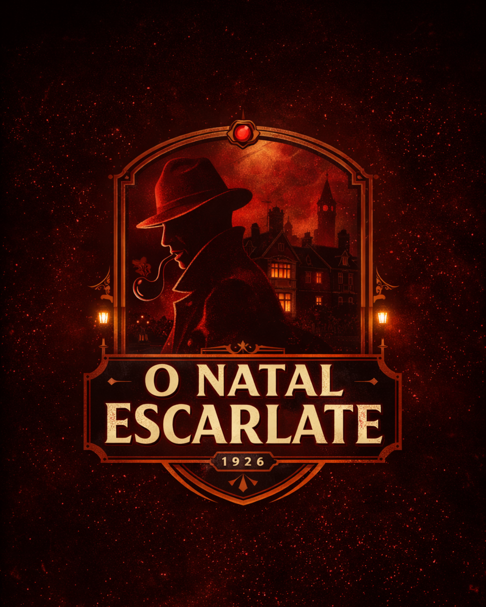
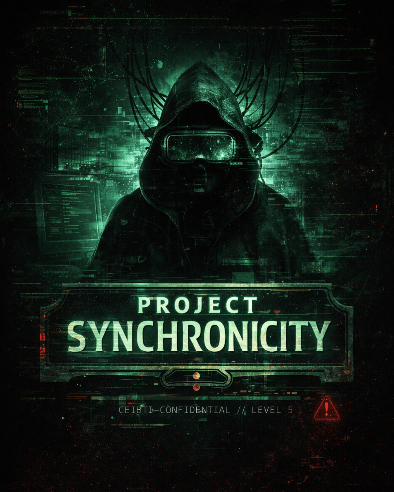

Product Engineering
APIs, autenticação, resiliência e arquitetura.
Estruturo sistemas com foco em clareza, manutenção, segurança e escalabilidade.
// Software Engineer · Product Builder · EdTech Creator
Da engenharia de APIs e plataformas educacionais até experiências front-end premium, meu foco é criar produtos úteis, elegantes e tecnicamente robustos.
// Core Stack
01 // O que eu construo
Product Engineering
Estruturo sistemas com foco em clareza, manutenção, segurança e escalabilidade.
Premium Front-End
Crio experiências visuais modernas, com hierarquia, contraste e acabamento profissional.
Learning & Platform Design
Transformo conteúdo complexo em produtos digitais claros, guiados e orientados a progresso.
02 // Tech Matrix
03 // Selected Work

EdTech Platform
Plataforma educacional com identidade própria, onboarding guiado, biblioteca, comunidade, trilhas, IA e experiência multilíngue.

Backend Engineering
API RESTful para pagamentos com multi-gateway, RBAC, failover, idempotência e foco em resiliência.
Premium Front-End
Experiência de streaming com direção visual premium, layout cinematográfico e construção focada em interface.

Internal Product
Projeto orientado a produto interno, com foco em organização de informação e experiência funcional.
Business Website
Site comercial com foco em apresentação de serviço, CTA e construção visual orientada à conversão.

Interactive Game
Projeto interativo com atmosfera narrativa, identidade visual forte e construção voltada à experiência.

Experimental Experience
Experiência experimental em desenvolvimento, com narrativa, atmosfera investigativa e linguagem visual autoral.
04 // How I Build
Começo pelo problema, contexto, fluxo e proposta de valor.
Estruturo a base técnica e a experiência para dar coerência ao produto.
Desenvolvo com foco em consistência, manutenção e evolução progressiva.
Refino interação, linguagem visual e acabamento para entrega forte.
05 // About
Sou Jessica França, desenvolvedora com olhar para produto, sistemas e experiência digital. Meu trabalho combina engenharia, direção visual e pensamento estrutural para construir soluções que não apenas funcionam, mas comunicam valor com clareza.
Gosto especialmente de projetos que exigem profundidade técnica, identidade visual forte e organização de conhecimento — como APIs, plataformas educacionais, interfaces premium e experiências interativas.
06 // Let’s Build
Estou aberta a projetos, produtos, parcerias e oportunidades onde estratégia, código e experiência precisem caminhar juntos.